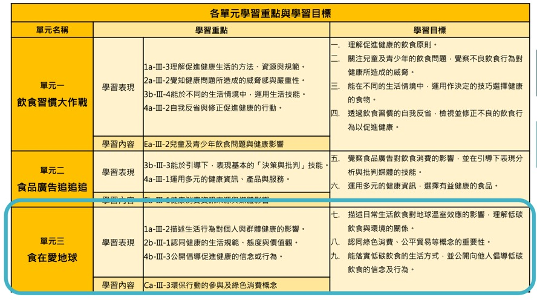

高雄輔導團領域素養研習
Table of Contents
- 1. 研習內容
- 2. 國中課綱
- 3. 高中課綱
- 4. 銜接
- 5. 資訊科技理念與素養導向課程設計
- 5.1. 架構: What / How / Why
- 5.2. WHY
- 5.3. 夢N
- 5.4. Contextualize
- 5.5. 從九年一貫到十二年國教
- 5.6. 關鍵: 搞清素養和能力的差異?
- 5.7. 素養: literacy? competence?
- 5.8. 核心素養與基本能力有什麼不同?
- 5.9. OECD DeSeCo project (2003)
- 5.10. 歐盟八大核心素養(Key competences)
- 5.11. 芬蘭七大跨域素養(2016新課綱)
- 5.12. 芬蘭新課綱實施情形
- 5.13. 芬蘭新課綱實施情形
- 5.14. 核心素養
- 5.15. 從基本能力到核心素養
- 5.16. 素養導向
- 5.17. 素養導向學習
- 5.18. 實作
- 5.19. 教學
- 5.20. 教科書
- 5.21. 素養導向課程設計
- 5.22. 核心素養
- 5.23. 課程設計
- 5.24. 素養導向學習內容規劃
- 5.25. 素養導向課程設計實作
- 5.26. 素養導向教學
- 5.27. Focus在國中資訊科
- 5.28. 標準本位課程發展
- 5.29. 參考網站
- 6. 素養導向課程示例 (搜尋演算法/對數)
- 7. 資料處理專題課程分享與實作
- 8. 資料處理專題課程分享與實作（二）學習評量方式探討
- 8.1. Video:
- 8.2. 評量的三種層次
- 8.3. 素養導向試題是什麼?
- 8.4. 素養導向試題不是什麼?
- 8.5. 109年素養導向數位評量計畫
- 8.6. 標準本位評量
- 8.7. SBSA介紹
- 8.8. 深度學習教學法的評量重點(NPDL)
- 8.9. 科技領域評量現況
- 8.10. 資訊領域素養評量試題研發:
- 8.11. 大考中心素養導向命題三大重點方向
- 8.12. 素養導向評量案例(網站資源)
- 8.13. 資訊領域評量
- 8.14. 素養導向評量
- 8.15. 核心素養導向試題有下列幾項特色
- 8.16. 試題設計步驟
- 8.17. 標準本位評量
- 8.18. 素養導向評量示例
- 8.19. 好的素養導向試題評量說明
- 8.20. 評量先行之設計
- 9. 工具網站
- 10. web
1. 研習內容
1.1. 上課日期:2020/04/28
1.2. 上課地點
1.3. 課表
| 08:40-09:00 | 報到 |
| 09:00-10:30 | 資訊科技理念與素養導向課程設計 |
| 10:30-10:40 | 休息 |
| 10:40-11:30 | 資料處理專題課程分享與實作（一) |
| 11:30-11:40 | 休息 |
| 11:40-12:30 | 資料處理專題課程分享與實作（二） |
| 學習評量方式探討 |
2. 國中課綱
2.1. 演算法(A)
- 7:資 A-IV-1 演算法基本概念。
- 8:資 A-IV-2 陣列資料結構的概念與應用。
- 8:資 A-IV-3 基本演算法的介紹。
2.2. 程式設計(P)
- 7:資 P-IV-1 程式語言基本概念、功能及應用。
- 7:資 P-IV-2 結構化程式設計。
- 8:資 P-IV-3 陣列程式設計實作。
- 8:資 P-IV-4 模組化程式設計的概念。
- 8:資 P-IV-5 模組化程式設計與問題解決實作。
2.3. 系統平台(S)
- 9:資 S-IV-1 系統平台重要發展與演進。
- 9:資 S-IV-2 系統平台之組成架構與基本運作原理。
- 9:資 S-IV-3 網路技術的概念與介紹。
- 9:資 S-IV-4 網路服務的概念與介紹。
2.4. 資料表示、處理及分析(D)
- 9:資 D-IV-1 資料數位化之原理與方法。
- 9:資 D-IV-2 數位資料的表示方法。
- 9:資 D-IV-3 資料處理概念與方法。
2.5. 資訊科技應用(T)
- 7:資 T-IV-1 資料處理應用專題。
- 9:資 T-IV-2 資訊科技應用專題。
2.6. 資訊科技與人類社會(H)
- 7:資 H-IV-1 個人資料保護。
- 7:資 H-IV-2 資訊科技合理使用原則。
- 7:資 H-IV-3 資訊安全。
- 8:資 H-IV-4 媒體與資訊科技相關社會議題。
- 8:資 H-IV-5 資訊倫理與法律。
- 9:資 H-IV-4 媒體與資訊科技相關社會議題。
- 9:資 H-IV-5 資訊倫理與法律。
- 9:資 H-IV-6 資訊科技對人類生活之影響。
- 9:資 H-IV-7 常見資訊產業的特性與種類。
3. 高中課綱
3.1. 演算法(A)
- 資 A-V-1 重要資料結構的概念與應用。
- 資 A-V-2 重要演算法的概念與應用。
- 資 A-V-3 演算法效能分析。
3.2. 程式設計(P)
- 資 P-V-1 文字式程式設計概念與實作。
- 資 P-V-2 陣列資料結構的程式設計實作。
- 資 P-V-3 重要演算法的程式設計實作。
3.3. 系統平台(S)
- 資 S-V-1 系統平台之運作原理。
- 資 S-V-2 系統平台之未來發展趨勢。
3.4. 資料表示、處理及分析(D)
- 資 D-V-1 巨量資料的概念。
- 資 D-V-2 資料探勘與機器學習的基本概念。
3.5. 資訊科技應用(T)
- 資 T-V-1 數位合作共創的概念與工具使用。
3.6. 資訊科技與人類社會(H)
- 資 H-V-1 資訊科技的合理使用原則。
- 資 H-V-2 個人資料的保護。
- 資 H-V-3 資訊科技對人與社會的影響與衝擊。
4. 銜接
| 主題 | 國中 | 高中 |
|---|---|---|
| 演算法(A) | 7:資 A-IV-1 演算法基本概念。 | 資 A-V-1 重要資料結構的概念與應用。 |
| 8:資 A-IV-2 陣列資料結構的概念與應用。 | 資 A-V-2 重要演算法的概念與應用。 | |
| 8:資 A-IV-3 基本演算法的介紹。 | 資 A-V-3 演算法效能分析。 | |
| 程式設計(P) | 7:資 P-IV-1 程式語言基本概念、功能及應用。 | 資 P-V-1 文字式程式設計概念與實作。 |
| 7:資 P-IV-2 結構化程式設計。 | 資 P-V-2 陣列資料結構的程式設計實作。 | |
| 8:資 P-IV-3 陣列程式設計實作。 | 資 P-V-3 重要演算法的程式設計實作。 | |
| 8:資 P-IV-4 模組化程式設計的概念。 | ||
| 8:資 P-IV-5 模組化程式設計與問題解決實作。 | ||
| 系統平台(S) | 9:資 S-IV-1 系統平台重要發展與演進。 | 資 S-V-1 系統平台之運作原理。 |
| 9:資 S-IV-2 系統平台之組成架構與基本運作原理。 | 資 S-V-2 系統平台之未來發展趨勢。 | |
| 9:資 S-IV-3 網路技術的概念與介紹。 | ||
| 9:資 S-IV-4 網路服務的概念與介紹。 | ||
| 主題 | 國中 | 高中 |
| 資料表示、處理及分析(D) | 9:資 D-IV-1 資料數位化之原理與方法。 | 資 D-V-1 巨量資料的概念。 |
| 9:資 D-IV-2 數位資料的表示方法。 | 資 D-V-2 資料探勘與機器學習的基本概念。 | |
| 9:資 D-IV-3 資料處理概念與方法。 | ||
| 資訊科技應用(T) | 7:資 T-IV-1 資料處理應用專題。 | 資 T-V-1 數位合作共創的概念與工具使用。 |
| 9:資 T-IV-2 資訊科技應用專題。 | ||
| 資訊科技與人類社會(H) | 7:資 H-IV-1 個人資料保護。 | 資 H-V-1 資訊科技的合理使用原則。 |
| 7:資 H-IV-2 資訊科技合理使用原則。 | 資 H-V-2 個人資料的保護。 | |
| 7:資 H-IV-3 資訊安全。 | 資 H-V-3 資訊科技對人與社會的影響與衝擊。 | |
| 8:資 H-IV-4 媒體與資訊科技相關社會議題。 | ||
| 8:資 H-IV-5 資訊倫理與法律。 | ||
| 9:資 H-IV-4 媒體與資訊科技相關社會議題。 | ||
| 9:資 H-IV-5 資訊倫理與法律。 | ||
| 9:資 H-IV-6 資訊科技對人類生活之影響。 | ||
| 9:資 H-IV-7 常見資訊產業的特性與種類。 |
5. 資訊科技理念與素養導向課程設計
依據: 十二年國民基本教育領域課程綱要核心素養發展手冊 時間: 90分
5.1. 架構: What / How / Why
5.2. WHY
以前
- 知識導向: [SLOGAN]給孩子足夠的知識
- 能力導向: [SLOGAN][九年一貫]給孩子帶著走的能力
- 素養導向: [SLOGAN]
為什麼要改？改變總有個原因或依據，是因為九貫的能力指標或範圍不夠廣？還是內容有問題？ -【數學力】站在「數學無趣論」的另一側
- 國際數學與科學教育成就趨勢調查（Trends in International Mathematics and Science Study：TIMSS）於2011年針對八年級數學能力的調查結果如下圖：
Figure 1: Caption
- 這張圖裡，y軸是學生認為數學的實用性，x軸是數學能力。可以看見，許多亞洲國家佔據著右下角，象徵著許多亞洲學生雖然數學程度好，但卻不認為這是門有用的學問，而台灣緊緊霸住了最右下角的位置，驗證了上篇文章的「數學無用論」。
- 除了無用論外，另一個擁有廣大信徒的理論是「數學無趣論」。 一樣是TIMSS的調查結果，可以看見，台灣學生對數學的興趣在世界各國中相對低落。不過，許多數學程度好的國家，學生對數學的興趣也不高。這是可以理解的。畢竟要提升能力就得靠大量訓練，許多職業運動球星，總是第一個到球場，最後一個離開的。唯有透過規律、帶點無趣的訓練，才能在專業上勝過別人。運動是這樣，數學也是這樣。
Figure 2: Caption
- 因此我想或許下一次在關心小朋友學習時，除了問他們「這次考試的東西都會了嗎？」不妨再加上一個更重要的問題「這次考試的東西，你有興趣嗎？」
5.2.1. 反思(台北教育大學謝佳叡教授)
上圖的新加坡與台灣為反例，新加坡與歐美國家在課堂與考試可以用計算機。學生不能用計算機是否為導致學生認為數學不實用的原因，這個不清楚，但是可以確定的是：不能用計算機會導致數學的出題與考試不符合實際生活情境，例如，例子只能用siin 45、sin 60…。由此來看，資訊領域是真正在考方法的， 我們的題目常常為了考知識而設計一些違反生活與人性的試題
5.3. 夢N
5.4. Contextualize
5.4.1. 素養導向課程設計要素(五大要素)
- 脈絡化的情境學習
- 回歸學生的生活情境與現代社會、文化環境，從學生的生活經驗和脈絡中取材
- 大部份作法：偏於「情境連結」(context-related)
- 素養導向：更從「脈絡化」（contextualize）的角度再予深化，學習的課題來自真實情境，從引發學生情境中的「問題意識」入手，引導學生敏於現象的覺察和思考，觸發學生的探究，尋求對問題的理解或解決。
- Contextulaize: to consider something in its context
- 將…置於其背景下考慮
- 引發學生思考或討論
如要促進學生深度討論、批判思考，教師應提出觸發學生討論與回應的問日人月一金，並在學生的回應上持續討論，以建立高層次的思考。 幾種討論技巧
Summaring(總結) Modeling(示範) Prompting(促進發言) Marking(標記) Challenging(挑戰) Participating(參與) 綜合整理哪些觀點已經被提出來 討論前明確指出將要做的、或願意思考，及學生對話的態度 讚美某個特別的討論觀點，鼓勵發言 鼓勵學生針對某個回應去思考 要求某一個學生或小組從另一個觀點思考 教師成為討論中的一員，分享自己對文本的觀點  (資料來源:胡衍南、王世豪主編(2020)。深度討論教學法理論與實踐)
(資料來源:胡衍南、王世豪主編(2020)。深度討論教學法理論與實踐)
- 教師交付或學生自訂工作任務
- 透過問題設計引導學習，將主動探究、對話、實作、提問、論證等納為歷程中的經常性活動，逐步展現學生的理解。
- 從中引導學生因時、因地、因情境、因目標、因問題需求而調整思考的策略，逐漸成為自我調整學習者(self-regulated learners)
- 學生使用方法或策略
學生能在資訊領域內或跨領域的學習探究歷程中自然地、習慣地運用方法和策略面對挑戰和解決問題。具體的素養表現包括：認知與後設認知策略、動機管理策略、資源管理策略的使用與因應調整
- 學生採取行動並進行反思調整
- 素養展現於面對問題時因情境制宜的判斷(judgements-in-context)以解決問題
- 教師須適時運用搭架和拆架，將學習責任逐漸轉移給學生
5.5. 從九年一貫到十二年國教
5.5.1. 九年一貫
- 以學習領域取代傳統分科課程，強調學校本位課程發展
- 語文：包含本國語文、英語等，注重對語文的聽說讀寫、基本溝通能力、文化與習俗等方面的學習。
- 健康與體育：包含身心發展與保健、運動技能、健康環境、運動與健康的生活習慣等方面的學習。
- 社會：包含歷史文化、地理環境、社會制度、道德規範、政治發展、經濟活動、人際互動、公民責任、本土教育、生活應用、愛護環境與實踐等方面的學習。
- 藝術與人文：包含音樂、視覺藝術、表演藝術等方面的學習，陶冶學生藝文之興趣與嗜好，俾能積極參與藝文活動，以提升其感受力、想像力、創造力等藝術能力與素養。
- 自然與生活科技：包含物質與能、生命世界、地球環境、生態保育、資訊科技等的學習、注重科學及科學研究知能，培養尊重生命、愛護環境的情操及善用科技與運用資訊等能力，並能實踐於日常生活中。
- 數學：包含數、形、量基本概念之認知、具運算能力、組織能力，並能應用於日常生活中，瞭解推理、解題思考過程，以及與他人溝通數學內涵的能力，並能做與其他學習領域適當題材相關之連結。
- 綜合活動：指凡能夠引導學習者進行實踐、體驗與省思、並能驗證與應用所知的活動。包含原童軍活動、輔導活動、家政活動、團體活動、及運用校內外資源獨立設計之學習活動。
- 強調基本能力
- 瞭解自我與發展潛能
- 欣賞、表現與創新
- 生涯規劃與終身學習
- 表達、溝通與分享
- 尊重、關懷與團隊合作
- 文化學習與國際瞭解
- 規劃、組織與實踐
- 運用科技與資訊
- 主動探索與研究
- 獨立思考與解決問題
- 資訊教育能力指標
資訊教育能力指標編碼原則，第一碼代表課程核心能力序號，資訊核心能力包括：
- 資訊科技概念的認知
- 資訊科技的使用
- 資料的處理與分析
- 網際網路的認識與應用
- 資訊科技與人類社會
第二碼代表階段序號(第一階段為國小一至二年級，第二階段為國小三至四年級，第三階段為國小五至六年級，第四階段為國中一至三年級)。第三碼代表能力指標之流水號。
核心能力範例: 資料的處理與分析
學習內涵 能力指標 文書處理 3-2-1 能使用編輯器進行文稿之編修。 3-2-2 能操作印表機輸出資料。 電腦繪圖 3-2-3 能操作常用之繪圖軟體。 3-3-1 能操作掃瞄器及數位相機等工具。 簡報製作 3-3-2 能利用簡報軟體編輯並播放簡報。 多媒體製作 3-3-3 能使用多媒體編輯軟體進行影音資料的製作。 圖表製作 3-4-1 能利用軟體工具分析簡單的數據資料。 3-4-2 能利用軟體工具製作圖與表。 資料庫管理 3-4-3 能認識資料庫的基本概念。 3-4-4 能建立及管理簡易資料庫。 問題解決與規劃 3-4-5 能針對問題提出可行的解決方法。 3-4-6 能規劃出問題解決的程序。 3-4-7 能評估問題解決方案的適切性。 3-4-8 能瞭解電腦解決問題的範圍與限制。 3-4-9 能判斷資訊的適用性及精確度。
- 口號:「不要背不動的書包，要培養帶著走的能力(Literacy)」。
5.5.2. 十二年國教
- 能力指標 -> 核心素養
- 口號: 「利用素養培養帶著走得能力(Comptence)」
- 手段不同 … 那九年一貫的能力是怎麼培養的?
- 「核心素養」為十二年國民基本教育課程發展的主軸，承續九年一貫課程綱要的「基本能力」、「核心能力」與「學科知識」，但涵蓋更寬廣和豐富的教育內涵（教育部，2014）。
- Video: 新課綱─讓孩子成為更好的自己
5.5.3. 九年一貫有什麼問題?
- 蔡清田教授以及12年國教團隊的教授們強調台灣的12年國教裡面的素養，同時涵蓋competence及literacy的概念。
- 十二年國教總綱種子講師宣講問題第一輯中更明顯表述「核心素養」與「基本能力」的差異，其謂：核心素養承續十大基本能力，但可彌補十大基本能力的涵蓋範疇不全、區隔不清以及缺漏重要生活議題；核心素養的理論依據較十大基本能力之理論依據來的精確且周延，不易形成混淆。
- 現在的教授重新訂一個分類標準，將十大基本能力各自歸位，然後說：十大基本能力不精確、不周延，易形成混淆。好像以前擬定九年一貫課程的那一群教授們個個都是笨蛋似的。
- 一變再變的名詞，有沒有可能只是為了呈現現在有權力潤飾的教授長官們的存在感啊？
資料來源: 余俊樑老師的BLOG
5.5.4. 九年一貫有什麼問題?
- 重點: 乃為兄弟我獨創
- 文無第一、武無第二
- 結果: 五權 -> 三權
- 分權思想可溯源到 古希臘 的 亞里斯多德 ，他提出國家有議事權、行政權、司法權、並認為國之治亂以三權是否調和為轉移 [2] :52 。近代明確闡述分權學説的是17世紀英國的 洛克 （ 哲學家 ，最重要的政治論文是1689年到1690年寫成的兩篇《政府論》）；1748年 法國 孟德斯鳩 在《 論法的精神 》一書中發展洛克之學説，系統地提出三權分立之原則 [2] :52-53 。權力分離的形式包括行政、司法、立法，解決一些在政治制度可能出現的問題。
5.6. 關鍵: 搞清素養和能力的差異?
核心素養的關鍵：終身學習者 資訊老師都是優秀的終身學習者，我們的主修 芬蘭的七素養是培養公民: 能過日子 台灣的三面九項是要培養聖人
5.7. 素養: literacy? competence?
5.7.1. 素養: Literacy or Competence
- Google: 素養的英文
Figure 3: Literacy
- So, what does lieteracy means?
- Competence v.s. Literacy
- 2001年國際工程教育會議(挪威)
\(Competence=(Knowledge+Skill)^{Attitude}\)
- 知識是素養的基礎
- 能力是知識應用在問題解決的過程
- 情意態度及價值判斷是行動的先決條件: 有能力做不一定有意願做、有意願做不一定有好態度去做
Figure 6: 素養、知識、能力、態度
- 始作俑者: UNESCO
聯合國教科文組織（United Nations Educational, Scientific and Cultural Organization，簡稱UNESCO）
- Literacy is the ability to identify, understand, interpret,create, communicate and compute, using printed andwritten materials associated with varying contexts.
- Literacy involves a continuum of learning in enablingindividuals to achieve their goals, to develop their knowledgeand potential, and to participate fully in their community andwider society (UNESCO, 2004; 2017).
- literacy指「識別、理解、解釋、創造、運算及使用不同環境下印刷與書面資料的能力。為涉及個人能夠實現目標、發展知識和潛能，並充分參與社區及廣大社會的連續學習」
5.7.2. 所以….?
- 基本能力: literacy
- 素養: competence
- 所以….?
- 結論: 台灣的中文已和英文字義脫勾
5.8. 核心素養與基本能力有什麼不同?
- 總綱中提出「核心素養」，這和原有九年一貫課程強調培養孩子帶著走的「基本能力」有什麼不同？
- 核心素養是指一個人適應現在生活及未來挑戰，所應具備的知識、能力與態度。「素養」要比「能力」更適用於當今臺灣社會，「核心素養」承續過去課程綱要的「基本能力」，但涵蓋更寬廣和豐富的教育內涵。
- 核心素養強調多面向的學習，為了培養學生的核心素養，學校教育不再只以學科知識作為學習的唯一範疇，而是彰顯學習者的主體性，重視學習者能夠運用所學於生活情境中。
Figure 7: Competence v.s. Literacy
5.9. OECD DeSeCo project (2003)
Video: 2-2-1. OECD ‘DeSeCo’ Project, OECD ‘Education 2030’ Project
- 經濟合作暨發展組織於1961年成立，總部在巴黎，目前計有38個會員國。OECD素有WTO智庫之稱，主要工作為研究分析，並強調尊重市場機制、減少政府干預，以及透過政策對話方式達到跨國政府間的經濟合作與發展。
- OECD現有38個成員；除了1961年的創始成員國外，其他成員國名後均列出了其入會年份。列表中打*號者是 世界銀行 「 高收入經濟體 」 [2] 。台灣目前為委員會觀察員。
- 俄羅斯：2007年5月，經合組織決定開放與俄羅斯的入會談判。同年11月確定了談判路線圖。2014年3月，經合組織暫停俄羅斯的入會談判。2022年2月25日，因應2022年俄羅斯入侵烏克蘭，經合組織宣布正式終結俄羅斯的入會進程。
1997年起，OECD啟動了著名的DeSeCo專案(Rychen & Salganik, 2001)， 亦即「核心素養的界定與選擇:理論與概念基礎」(The project of definition and selection of competencies: Theoretical and conceptual foundation)，並導向2005年 出版的《核心素養的界定與選擇:行政摘要》(The Definition and Selection of Key Competencies: Executive Summary)(OECD, 2005)。其中，對於知能(literacy) 與素養(competency)有簡要而清楚的界定:
- 「知能」乃指學生能夠有效 地分析、推理、溝通，以便能在各種不同的學科/情境中，提出、解決與解釋問 題(OECD, 2005, p. 3)
- 「素養」不只是知識與技能，亦包含了能參照與 運用心理能力或態度，以回應外在更複雜的要求。
例如，有效溝通的素養乃指個 人掌握了語言的知識(knowledge of languages)、使用IT工具的能力(practical IT skills)，以及對溝通對象的態度(attitude)(OECD, 2005, p. 4)。前者即是PISA 對於閱讀、數學、科學素養的界定基礎，並自2000年起啟動跨國的評量測驗與比較 分析;後者進一步導出DeSeCo專案所界定的素養(competencies)，包括「能互動地使用工具」、「能在異質社群中進行互動」及「能自律自主地行動」三個面向共九項(OECD, 2005; Rychen & Salganik, 2003)。1
5.10. 歐盟八大核心素養(Key competences)
- 母語溝通（Communication in the mother tongue）
- 外語溝通（Communication in foreign languages）
- 資訊與溝通科技（ICT）
- 算數及數學、科學、科技（Numeracy and competencies in math, science and technology）
- 企業精神（Entrepreneurship）
- 人際與公民能力（Interpersonal and civic competencies）
- 學會學習（Learning to learn）
- 一般文化（General culture）
Figure 8: 歐盟八大核心素養(Key competences)
5.11. 芬蘭七大跨域素養(2016新課綱)
芬蘭新課綱有三大特色：
- 新課綱的核心：跨領域統整與學習；
- 新課程由學校自主發展；
- 讓學生主動參與課程設計。

Figure 9: 芬蘭七大跨域素養
5.12. 芬蘭新課綱實施情形
- 跨學科學學習
- 專題式學習（project-based learning）
- 現象為本的學習（phenomenon-based learning）
- 重視合作學習
- 強調評量即學習(assessment as learning)
- 芬蘭新課綱主要為培養有足夠能力面對未來生活世界挑戰的新世代，站在傳統學科的基礎上，強調跨領域以及「現象為本的學習」(phenomenon-based project)。
- 所謂現象為本學習乃在於學習課題來自真實世界現象，如城市規劃、恐攻、歐盟、水資源、能量等等，以現象為課題的學習必須深入情境脈絡，需要整合許多領域／科目才足以能夠整體理解甚至解決問題。
- 在課程設計上，現象為本的學習的成功在於讓不同領域／科目教師共同備課與協同教學，並且採取探究學習、問題導向、方案與檔案等學習方法，以真實與E化的學習情境引導學生學習。
- 學習過程中，學生必須參與其中，鼓勵能夠和專家社群一同工作，同時能夠分辨、分析與善用訊息、資料與知識，在實作體驗中深度學習。隨著跨領域、以現象為本的學習，傳統紙筆測驗也需要同步轉型，畢竟填空問答或是非選擇題－無法讓學生完整學習如何規劃宜居城市吧？！
5.13. 芬蘭新課綱實施情形
5.13.1. 小學
在芬蘭，跨領域課程目前在國小實行最順利，因為國小的班級導師經常是一人身兼數個學科的老師，所以很容易進行跨學科整合專案，且班導會跟同一批學生在一起六年，直到他畢業為止，所以很容易掌握每個學生的學習情況（林竹芸，2017）。
5.13.2. 國中
在國中七到九年級的實施，大致順利，但多些阻力，因為每個國中老師都有自己的學科專業，能跨科教學的老師較少，要靠老師之間進行更多溝通，但目前芬蘭沒有強制安排老師的溝通會議，是讓各校老師自行規劃，所以內部協調不順暢的學校，最容易出狀況，常出現的狀況是沒有安排好相關學科在同一週上課，像是在專案研究週，剛好排到數學課、性教育知識課，兩個老師都發現很難結合，學生也不知道怎麼設定主題（林竹芸，2017）。
5.13.3. 高中
在高中十到十二年級的實施困難最大。目前仍有許多學校不想推行「現象跨域學習」，一學期中只願意花一個月做「現象跨域學習」的專案。原先的計劃是希望每個學生在每個月都做一個新的專案，但是高中生有升大學的學科考試壓力，全世界都一樣，如果大學升學考試制度不變，老師的教學就會受限。但如果大學考試只強調測驗知識，就會把國小、國中培養起來的整合思考能力毀掉，所以芬蘭政府已經著手改變大學的升學考試內容（董恆秀，2015）。
5.14. 核心素養
5.14.1. 核心
「核心」係為基本且共同
5.14.2. 素養
所謂「素養」係指個體為了健全發展，必須因應生活情境需求所不可或缺的知識、能力、態度。素養強調教育的價值與功能，是學習而獲得的知識、能力和態度，合乎認知、技能、情意的教育目標，重視教育的過程與結果。
5.14.3. 核心素養
「核心素養」的涵義是指一個人為適應現在生活及面對未來挑戰，所應具備的知識、能力(包含技能)與態度。核心素養強調學習不宜以學科知識及技能為限，而應關注學習與生活的結合，透過實踐力行而彰顯學習者的全人發展。
Figure 10: 核心素養的養成
:CoreLiteracy
5.14.4. 核心素養的三面九項
5.15. 從基本能力到核心素養
回顧台灣近年來兩波課程改革，分別訴諸「基本能力」與「核心素養」兩種觀點，各自的意涵背後涉及了不同的知識觀和意識型態。
- 1998年提出《教育改革行動方案》，台灣教育部根據其中「革新九年一貫課程」項目，陸續頒布及推動《90 年國民中小學九年一貫課程暫時綱要》、《92 年國民中小學九年一貫課程綱要》，稍後亦修訂《97 年國民中小學九年一貫課程綱要》。這波改革立基開放、一貫、統整的理念，訴求以「基本能力」取代過往國家全面控制的「課程標準」，強調課程鬆綁、校本課程、學習領域統整、協同教學等方面的革新。
- 2013 年國家教育研究院提出《十二年國民基本教育課程發展指引》，擬定以「核心素養」為主軸的方針。
- 檢視九年一貫課程改革在實務場域的推動，仍多偏重於以知識為中心，是技術觀導向
- 十二年國民基本教育的課程改革以「核心素養」為課程發展的主軸，關注課程銜接、課程統整，以及課程轉化於各學習領域和議題的原則，強調超越學科知識及技能的局限，結合生活與學習，培養學生能夠適應現在生活及面對未來挑戰所應具備的知識、能力和態度（國家教育研究院，2014a，2014b；教育部，2014）。
5.15.1. 素養與能力
| 素養 | 能力 | |
|---|---|---|
| 界定 | 素養的界定較為精確而周延，素養不只重視知識，也 | 能力的界定比較含糊不清而較不精確，容易引起混淆。 |
| 重視能力，更強調態度的重要性。 | ||
| 意義 | 素養是個體為了發展成為一個健全個體，必頇因應未 | 能力是指個人具有能夠勝任某項任務的才能之實際能力與 |
| 來混沌複雜之生活情境需求，所不可欠缺的知識、能 | 潛在能力，往往未涉及態度情意價值。 | |
| 力與態度。 | ||
| 先/後天 | 素養強調教育價值功能，素養是學習的結果，並非先 | 能力的形成是經由先天遺傳與後天努力習得的。 |
| 天遺傳，是後天努力學習而獲得的，合乎認知、技能 | ||
| 、情意的教育目標。 | ||
| 適用的 | 素養適用於複雜多變的「新經濟時代」與「資訊社會」 | 能力是偏向於過去「傳統社會」與「工業社會」所強調的 |
| 社會 | 之科技網路世代各種生活場域的活動，以成功地回應特 | 技術能力、技能、職能等用語。 |
| 定生活情境下的複雜需求，特別是因應當前後現代社會 | ||
| 的複雜生活所需要所需的知識、能力與態度。 | ||
| 理據 | 可促進個人發展與社會發展，已超越行為主義的能力， | 偏個人工作謀生偏向「個人主義」「功利導向」，易有流 |
| 具有哲學、人類學、心理學、經濟學、以及社會學等不 | 於能力本位行為主義之爭議。 | |
| 同學門領域的理論根據。 | ||
| 實例 | 語文素養 | 聽、說、讀、寫以及操作簡易的機器設備，如使用打字機 |
| 科學素養 | 、傳真機、收音機、隨身聽、電視、洗衣機等。 | |
| 民主素養 | ||
| 資訊素養 | ||
| 媒體素養 | ||
| 多元文化素養 | ||
| 自主行動 | ||
| 社會參與溝通互動 |
5.15.2. 三面九項核心素養與十大基本能力
5.15.3. 能力本位(國家教育研究院辭書)
「能力本位教學」是能力本位教育(competency-based education, CBE)的一環；後者源起於1970年代美國的教育改革，政府主管教育部門要求大學及學院設計能力本位課程，以提高教育的成本效益與效能。此新課程的設計注重如何評估教育的特殊學習成果，以及設計達到學習成果前的教學技術，由是，能力本位教學成為達成能力本位教育的重要途徑。如何界定能力(competency)、教導能力和評量能力等，是能力本位教學的重要成分。
能力是對人類活動的描述，代表人類的任何認知活動或具體行為。在能力本位教學目標的擬定上，以清晰的描述學生在完成學習後應達到什麼表現標準為特色，通常稱為表現目標(performance obiectives)或學習目標(learning objectives)。表現目標乃是很清楚的指出學生將在什麼狀況之下做出什麼樣的動作或行為以代表學習成果，而學習目標則較注重學生學習過程的能力評估，不特別強調外在的行為評估。
實施能力本位教學有兩個優點：一是評量學生的表現成果，而不是他是否遵循某一特殊的教學途徑，因此學習機會(learning opportunities)的彈性大為增加，如學生可經由傳統教室教學、個別化教學單元、開放性學習環境、電腦輔助教學等不同途徑完成目標學習。另一能力本位教學的優點是學習的內容或分量的彈性，由於學習的內容被分析成層次分明的目標敘述，不同能力的學生可被指定不同分量的學習目標或學習單元(learning units)，是傳統的綜合性教學計畫所無法做到的。 能力本位教學的基本工作是擬定表現標準以評估學生在學習後是否完滿達成目標所指定的。例如歷史科單元的表現標準之一為「學生能夠描述中國參與世界大戰的原因」，由此能力所發展的表現目標則為「給予一篇文章，學生能夠分別指出中國參與兩次世界大戰的原因。學生能夠分析原因的相似性和相異性，並以紙筆列出至少一點。」
1970年代後有關能力本位教育的推動遭到一些阻礙，教師懷疑擬定具體表現目標的必要性，而且具體目標過於繁瑣，並可能妨礙高層次目標，如創造性思考能力的培養。
5.15.4. 從能力本位到素養導向
在英語世界，雖然有人認為 competence 較常指行為表現所對應的內在能力，而 competency 較常指內在素質或特質，但並未形成共識。無論是哪一個英文詞，臺灣早期大多翻譯成「能力」，晚近大多翻譯成「素養」，連帶 competency-based education，CBE 一詞，也從「能力本位教育」改譯成「素養導向教育」，這都是反映歐美世界對於這些概念的看法產生了變遷。
5.16. 素養導向
5.16.1. 定義
係指以學生為學習主體，在一個情境當中，學生能活用所學的知識、技能與態度並實踐於行動中的一種課程與教學取向。這種取向，有別於以教師教學為主的「傳統導向」以及以學科知識學習為主的「內容導向」。
5.17. 素養導向學習
5.17.1. 反例：
我們最常聽到的抱怨是：學LOG號做什麼？生活中又用不到。這就是當初沒有情境設定：
- 以binary search為例-算比較次數
- 以三角函數為例：童軍課計由建築物的高度..
5.17.2. 什麼是素養導向學習
- 整合知識、能力、態度
- 情境化、脈絡化的學習: 這樣學生才能有深刻的體認「學習是有用的」
- 強調學習歷程、策略
- 在生活中實踐應用
5.17.3. 學習重點
9項核心素養 -> 學習表現+學習內容
5.18. 實作
5.18.1. 挑選你最看重的核心素養
5.18.2. 摘錄你最有感的基本理念
5.18.3. 你在哪一課程體現你所看重的核心素養
5.19. 教學
- 教師的研習由以往的講述->產出式的研習
5.20. 教科書
5.20.1. 教育改革的四個面向：
- 課程
- 教學
- 評量
- 教材
- 教材看起來有不一樣嗎? 素養導向要融入到教科書的什麼部份
- 教材不限制課本(部定課程、校定課程、因材網、軟體)，我們可能讀不同學校、不同老師，但多數人讀同一套教科書長大
- 我們現在對教材已經脫離了傳統對教科書的定義，
5.20.2. 教材的定位(國教院陳世文)
學生每天會碰到的問題：
- Text: 文本，學生在課本裡讀了什麼
- Teacher: 教師，老師在學校教了什麼
- Test: 測驗，考試要考什麼
- 教法、教具、教學: 生生有平板(200億)，那平板裡面要要放什麼?
- 教材、媒介、評量：教材透過不同媒介的形式進行評量，教科書裡有例題、有習作
- 目標、任務、評估：老師有教學目標、根據目標來設計任務、最後評估學生的學習
- 最外圈為課程綱要，不管是課本、教學、評量都要遵循課程綱要的要求與精神
- 教材在課程改革的過程中有十分鮮明的角色，制定課綱後接下來就是教材的編、審，教材在課改過程中有一種承上（體現課綱的理念與精神）啟下（啟動現場教師與評量端）的作用
- 課綱是設計圖、教師是工程師、教材是建材
Figure 11: 教材在教育系統中的角色
5.20.3. 素養導向的教材發展特色
 舉幾本課本的例子、跨領域、貼近生活(各舉一個例子)
教材越精簡，教師的發揮空間就越大、事前的備課也就越辛苦
舉幾本課本的例子、跨領域、貼近生活(各舉一個例子)
教材越精簡，教師的發揮空間就越大、事前的備課也就越辛苦
5.21. 素養導向課程設計
考科: 考試領導教學 高中: APCS / task / online judge 資訊科: 作業領導教學 學習內容 / 學習表現:誰表現?學生，課程設計/上課時要想：要讓學生能表現什麼?/做出什麼?
5.21.1. 課程設計的邏輯
- Top-Down
從課程設計的邏輯而言，UbD(understanding by design)與 CBCI 皆採 Top-down 思維，先思考單元主題的「大概念」（上位概念），以「核心問題」（essential questions）或「概念透鏡」（conceptual lens）作為聚焦學習內容的濾鏡，再連結相的概念，最後連結相關的知識或技能，向下建構課程。
- Buttom-Up
然而，就教學實務而言，若要漸進翻轉傳統的課程設計，以Bottom-up 思維來架構單一學科的概念本位課程，似乎較為簡便可行。具體地說，
- 首先，教師從自己熟悉的學科內容知識(CK)出發，思考單元主題的知識 與技能目標;
- 其次，升維思考，將目標抽象化為幾個「概念」;
- 接著，從中選擇一個最重要的概念，作為聚焦學習內容的「概念透鏡」;
- 然後，用一個直述句來描述概念透鏡和其他概念，組織成以概念透鏡為主詞的「大概念/通則」。
- 最後，進一步把直述句轉為疑問句，把大概念轉化為一體兩面的「核心問題」，以激發學生高 層次的思考，產生持續的探究、爭論與理解。
- 「概念」是通往「素養」的路標
可以「概念」為思考的起點，設計課程、教學與評量。 不過，要到達「素養」終點，還得在課程中設計引導學生探究概念的實作任務，以及能促進概念遷移的真實情 境
5.21.2. 重理解的課程設計(Understanding by Design，UbD) / 逆向課程設計(Backward Design)
Figure 12: UbD
5.21.3. 素養導向教學範例#1
[資料來源: 吳璧純、詹志禹(2018)]
5.21.4. 課程架構發展重點
5.21.5. 素養導向教學的四大原則
由各領域/科目之核心素養、學習重點轉化為
- (學習目標)整合知識、技能、態度: 包含學習表現和校訂學習內容
- (學習經驗)情境脈絡化的學習
- (學習表現)學習方法及策略: 學習表現就要參考總綱素養中三面九項內的動詞
- (學習評量)活用實踐的表現
5.21.6. 素養導向範例
Intel AI 韓國泡菜
5.21.7. 從作品到課程的反向工程:夢N
- 影片示例:https://www.youtube.com/watch?v=LBK6La3hxzw&t=90s
- 完整課程: 九年級生、資科整合專題-居家氛圍一燈搞定
- https://www.youtube.com/watch?v=_MhkJ3T-hw8
- https://www.youtube.com/watch?v=toJlfy8_-7E
- https://weteach.edu.tw/course/view.php?id=3294
- https://weteach.edu.tw/pluginfile.php/286833/mod_resource/content/0/%E5%9C%8B%E5%B0%8F%E7%A7%91%E6%8A%80%E6%95%99%E8%82%B2%E5%8F%8A%E8%B3%87%E8%A8%8A%E6%95%99%E8%82%B2%E8%AA%B2%E7%A8%8B%E7%99%BC%E5%B1%95%E3%80%90%E5%BE%9E%E8%83%BD%E5%8A%9B%E5%B0%8E%E5%90%91%E5%BE%80%E7%B4%A0%E9%A4%8A%E5%B0%8E%E5%90%91%E3%80%91.pdf
5.22. 核心素養
| 關鍵 | 核心 | 核心素養項目 | 項目說明 | 國中 |
|---|---|---|---|---|
| 要素 | 素養 | 核心素養具體內涵 | ||
| 面向 | ||||
| 終身 | A.自主 | A1. | 具備身心健全發展的素質， | J-A1 具備良好的身心發展知能 |
| 學習 | 行動 | 身心素質 | 擁有合宜的人性觀與自我觀, | 與態度，並展現自我潛能、探索 |
| 者 | 與 | 同時透過選擇、探索人性、 | 人性、自我價值與生命意義、積 | |
| 自我精進 | 自我價值與生命意義、積極實踐。 | 極實踐。 | ||
| ------------ | -------------------------------- | ------------------------------ | ||
| A2. | 具備問題理解、思辨分析、 | J-A2 具備理解情境全貌， | ||
| 系統思考 | 推理批判的系統思考與 | 並做獨立思考與分析的知能， | ||
| 與 | 後設思考素養，並能行動與反思， | 運用適當的策略處理解決生活 | ||
| 解決問題 | 以有效處理及解決生活、生命問題。 | 及生命議題。 | ||
| ------------ | -------------------------------- | ------------------------------ | ||
| A3. | 具備規劃及執行計畫的能力，並試探 | J-A3 具備善用資源以擬定計畫， | ||
| 規劃執行 | 與發展多元專業知能、充實生活經驗 | 有效執行,並發揮主動學習與 | ||
| 與 | ，發揮創新精神，以因應社會變遷、 | 創新求變的素養。 | ||
| 創新應變 | 增進個人的彈性適應力。 |
5.23. 課程設計
- 選擇一個學習單元。
- 選擇一個學習單元做為設計標的(3 節以 上)。
- 註明單元名稱、領域、年級。
- 單元價值定位。
- 參考領綱理念與目標，轉化聚焦於本單元 (非單元主題的重複)
- 可結合「設計理念」發想(Why )。
- 思考:對於學生學習，這個單元促成那些跨單元理解?促發怎樣的學習遷移?
- 呼應的領綱核心素養。
- 根據學生特性挑選呼應的領域核心素養。
- 建議以1-2則為原則，避免失焦。
- 將領域核心素養編碼及內容完整複製，但可以雙刪除線表示刪節部分內容。
- 若領域核心素養內容較多，亦可採擷取方式敘寫(註明「已擷取」)
- 撰寫單元目標。
- 將選取後的「領域核心素養」與「價值定位」結合，敘寫單元目標。
- 目標基本形式:(副詞+)動詞+名詞。
- 運用各領域核心素養內動作性質的字詞做為參考「動詞」，結合單元內容(名詞)， 以完整句子串連敘寫。
- 設計總結性表現任務。
- 扣緊單元目標，怎樣讓學生表現出對所 學內容的理解和應用(總結性作品或行 動)?例如，報告、發表、導覽介紹、 寫作、評論、報導、圖表或模型製作、 媒體製作、概念圖、方案設計、實驗操 作、展演、活動策辦、參與活動、各式 創作等。
- 此總結性作品或行動，評量基準或學習挑 戰為何?怎樣引導學生為自己的學習負 責?
- 設想連結的情境脈絡。
- 透過「打開經驗世界」和「發展抽象能力」，讓學生和世界真實的連結。
- 情境脈絡即在釐清單元中學習的「結」， 並將它們有機的「連」起來。
- 這些「連」「結」，可包括知識與知識、 知識與生活情境、知識與能力、知能與 行動等之間的點線面串連。
- 列出節次安排。
- 串聯學習脈絡，用文、圖或表呈現單元架構。
- 決定所要設計的節次(不限於1節)。
- 將選定節次加外框(可塗淺底色)表示之
- 擇定設計節次， 選出學習重點， 轉化為學習目標。
- 找出此教學結合的學習表現及學習內容， 但須聚焦，是教學上會花時間處理的才 納入。
- 將學習表現及學習內容的編碼及內容完整 複製，但可將未用部分雙刪除，以再次 聚焦。
- 轉化為學習目標，目標基本形式為，動詞 +名詞(學習重點的交織轉化)。「動詞」 可從學習表現提取並視學生特性調整之， 「名詞」可從學習內容轉化為本節次設 計的具體內容;二者適切結合，即為課 程目標。
- 設計學習活動及形成性學習評量。
- 將學習目標及情境脈絡緊密連結，設計活動及流程。
- 學習活動著重從學生學習視角敘寫，概略 描述相關方法策略、學習內容、學習材 料、學習鷹架、表單工具等。
- 評量點設定在何處?用何證據檢視學習目標的達成狀況(評量內容與方式)?
- 本設計與素養導向教學四大 原則的呼應或開展。
- 設計完後，整體檢視:此課程及教學設計怎樣呼應或開展素養導向教學?
- 請討論後寫出2-3則理由。
5.24. 素養導向學習內容規劃
- 選擇課程主題（單元）
- 目的：擇定課程主題
- 資源：
- 總綱、群科課程綱要
- 技高群科課程手冊
- 學校課程計畫書
- 教科書
檢視主題（單元）與整體課程的關連
- 目的：了解主題（單元）與科教育目標、職場人力需求、學生圖像之關連
- 資源：課程計畫書（科課程地圖、學生圖像、學校願景…）
教師在設計課程內容時，除了需考量學生起點行為之外，也需提高視野，檢視本課程單元在科整體課程架構中的位置，思考本單元與科目、群科課程的關連，及所欲培養的核心素養與群科對應產業人力需求、學生圖像、學校願景之連結
選擇適合的核心素養
- 目的：決定適合本單元培養之核心素養(1)
- 資源：總綱、技高一般科目課綱、專業群科課綱
教師挑選本單元課程所欲培養學生帶得走的能力，需和學習目標、學習表現、學習內容環環相扣。 同一單元挑選不同的核心素養，教學設計方向就會有所不同
Figure 15: 核心素養的轉換
- 留意: 素養在各教育階段、領域／科目／群科間的轉換
- 找出:
- 總綱三面九項核心素養
- 技高教育階段（V-U）核心素養
- 各領域／科目／群科核心素養的對應關係
擇定學習重點、檢核與核心素養的呼應
- 目的：透過學習重點，使課程設計與核心素養相呼應
- 資料：群科課程綱要、技高群科課程手冊、學校課程計畫書
教師可透過雙向細目表，呈現學習內容、學習表現的對應關係，再與學習目標或核心素養進行來回檢視
- 學習重點由「學習表現」及「學習內容」二個向度組成
- 學習表現：認知歷程、情意、態度之學習展現
- 學習內容：該領域/科目之重要事實、概念、原理原則、技能、態度與後設認知等知識
- 學習內容與學習表現的範例
學習主題: 降龍十八掌
Figure 16: Caption
學習內容與學習表現
[資料來源: 林永豐(2019)]
- 設定學習目標
- 目的的：結合挑選的核心素養與學習重點，具體化學生認知、情意與技能的學習目標
- 產出：列出3-5個學習目標（含認知、情意、技能）
- 資源：核心素養發展手冊
範例
 [資料來源: 林永豐(2019)]
學習目標用詞(認知)
目標層次 行為動詞 記憶 認識、回憶、定義、描述、識別、標明、列舉、配合、指定、概述、複製、陳述 理解 說明、舉例、分類、概述、推斷、比較、解釋、轉換、辯護、辨別、評價、引申、歸納、釋義、預測、改寫 應用 執行、實施、改變(轉換)、計算、證明(說明或展示)、發現(探索)、操 作、修改、預估(測)、準備、連結、示範、解決、使用(運用) 分析 差別、組織、歸因、拆解、圖示、區別、辨別、識別、 (舉例)說明、推論、概述、指出、連結、選擇、區分、細分 評鑑 檢核、評述、評價、比較、評斷(總結)、對照、描述、鑑別(區別)、解釋、證明、詮釋、連結(關聯)、總結、支持(證實) 創造 創造、計劃、製作 學習目標用詞(態度價值)
目標層次 行為動詞 接受 詢問、選擇、描述、(領會、採用或仿效)、給予、(維持、包含)、識別、 (定位)、指定、指明、回應、選擇、使用 反應(回應) 反應(回應)、幫助、順從、遵守、討論、(接受或做出反應)、幫助、標明、執行(表現)、實行、呈現、覺察、背誦、報告、選擇、識別、編寫 評價 完成、描述、區分、解釋、(領會、採用或仿效)、形成、創始(著手)、(邀約或引致)、參與、證明、提議、解讀、報告、選擇、分享、研究、操作或運作 重組或組織 堅持(遵守)、改變、安排、結合、對比、完成、辯護、解釋、歸納、識別、結合、修改、 (整理或安排)、組織、準備、連結、綜合 價值觀的型塑品格的養成 扮演、區別、表現(展現、顯示)、影響、傾聽、修改、執行或表現、實行、提議、具備、詢問、修訂、服務或供應、解決、使用、證實 學習目標用詞(認知)
Figure 17: v1
Figure 18: v2
Figure 19: v3
融入重大議題(19項): PASS
- 目的：思考可融入主題（單元）的議題項目及實質內涵
- 資源：議題融入說明手冊
議題是涉及人類發展與價值的社會課題。總綱明訂19項議題
- 部分已納入核心素養（如：品德、科技、資訊、多元文化、國際教育…）
- 部分單獨設立科目（如：生命、科技、生涯規劃…）
- 部分納入領綱學習重點 （如：人權、環境、海洋…）
5.25. 素養導向課程設計實作
5.25.1. 了解課程檢核表[活動]
- 第一階段:課程架構發展
- 有明確且可執行的學習目標
- 學習目標與核心素養確實有對應
- 學習目標包含知識、技能和情意層面
- 學習目標兼顧上述各層面而未偏重特定層面
- 學習目標與學習內容、學習表現確實有對應
- 學習表現之設定符合學生發展，且未限定於某些項目
- 課程設定最終的表現任務(總結性評量)
- 最終的表現任務與學習目標是相對應的
- 課程設定階段性的檢核方式
- 表現任務(總結性評量)或階段檢核，有明確的評量規準或標準。
5.25.2. 促進學習的提問
- 概念建構的提問
- 概念形成：發散到聚斂(通則產生)
- 概念衝突：引起反思或概念改變
- 概念應用的提問
- 概念理解：解題中檢核理解
- 概念遷移：不同情境中使用，產生新概念或新能力
- 概念跳躍：概念間產生連結，整併，讓概念記憶更精簡
5.25.3. 促進學習的提問原則
- 緊扣大概念，從核心出發。
- 巨觀到微觀，現象到建模。
- 友善的問題，挑戰的問題。
- Think Big, Start Small
- 關鍵問題—核心概念
- 哪個問題會是第一個問題？
- 下一個問題是甚麼…
- 素樸問題—邀請學生
- 用生活相關的例子或樣態
- 最素樸的方式呈現
- 所有孩子都能說出自己的看法(無關對錯)
- 最重要的就是核心(學科本質)與邏輯(概念發展次序
- 關鍵問題—核心概念
5.25.4. 問個好問題
- 第一步：期望得到的答案(看到的學習表現)
- 第二步：問題想檢核的概念(預期的學習目標)
- 第三步：解決問題所需能力(素養)將決定問題類型 (學習表現決定類型)
- 第四步：問題適合的類型與提問用語(在情境中，依序提問)
- 第五步：預測所有可能的答案與困難(連結學生分析)
- 第六步：如何收斂或發展
5.26. 素養導向教學
- 以生成素養為目的
5.26.1. 「素養導向」教學的展現，主要能回答下列四個問題：(教育部定義)
- 是否融合知識、情意與技能？ 例如：學生能於國語文課中進行新詩仿作；學生能於自然科學課中設計環境汙染調查表等表現。
- 是否展現教與學的策略與方法？ 例如：教師能進行概念圖教學、有層次的提問，學生的學習能繪製心智圖、進行小組合作學習或能運用作筆記的策略，掌握文章的重點等。
- 是否營造適當的學習情境？ 例如：教師為增進學生們的互動，能營造一個正向的競合情境；為增進學生實際的體驗，能運用科技營造一個虛擬真實的情境等。
- 學生是否有整合活用或實際行動？ 例如：學生在閱讀「我為人人黃金葛」的科普文章後，能親手栽種黃金葛；或是學生於體育課中學會跳土風舞後能於社區老人活動中心進行分享
5.26.2. 待查
核心素養要培養學生成為終身學習者，在總綱中的定義，包括自主行動、溝通互動和社會參與三大面向和九大項目，並不是台灣的課綱制定者獨創，是參考歐盟、經濟合作暨發展組織、聯合國教科文組織等三大國際教育組織和國內學者相關研究。 核心素養是什麼？
- 從教師為主體到以學生為主體 以前知識的唯一來源是「教材」（課本），老師是宣達教材者，但是現在的知識來源太多元，變動又太快。老師不可能教所有的知識，而是要教學生學習的方法，才能成為終身學習者。
- 從科目學習到跨科目、跨領域學習 在真實的生活中，不可能只用數學或是英文來解決問題，必須融合所有的學科知識，加上溝通團隊互動，堅持克服學習中的困難，以及毅力才能進步。這也是為什麼新的素養導向考題，數學或是科學的科目會有很長的題目文本，需要國文科培養的閱讀力；國文科的考題又有很複雜的表格，需要耐心閱讀和分析。這些都是真實生活中會遇到的狀況。
- 從只教知識，到必須同時重視技能和情意 台東大學教育學院院長曾世杰曾任國教院副院長，他的專欄文章曾記錄國教院當年召開會議，討論新課綱裡的「素養」是不是就是經濟合作暨發展組織所關心的學生能力（competence）？在該次會議中，學者專家認為，教育不能只為經濟發展服務，只談能力會把人「工具化」，教育應該要有更高的使命。結論是，108課綱所稱的素養，內涵更大於能力。
- 不僅重視結果，也要重視學習的歷程和方法 在過去，學習的結果就是考試分數，考試是學習終點，分數是學習的結果。但是這樣的取向，讓學生習慣考完試就不想繼續學習，無法培養終身學習者。在108課綱中有一個重要改變就是高中階段的學習，從高一開始就必須累積自己的學習歷程檔案，希望引導學生、老師和家長不要把眼光只放在考試分數。
- 不僅在學校中學習，更要落實在社會行動，用知識解決真實問題 國民教育要培養的就是未來人才，除了企業需要能力，更必須是有社會參與感的公民，這些素質都必須從小學起。在學習的過程中，要透過引導，多和世界正在發生的議題連結，從中引發動機、觸動學習和解決問題。
- 把知識、能力和態度整合運用在情境化、脈絡化的學習過程中，注重學習歷程、方法與策略，透過實踐力行的表現評量學習的成效。
5.26.3. 老師要怎麼教素養？
根據國際備受肯定的素養課程經驗，教學上有個20／80原則，老師的講述只占20％、80％時間用來設計學生參與的教學活動；十分重視探究、實作、實驗、討論、小組合作、反思、表達等活動。學生學習上高度參與，效果較佳、容易激發興趣，加上有反思的歷程，對事情形成觀點和態度，能夠跳脫過去純背誦死知識的單薄。
5.27. Focus在國中資訊科
5.28. 標準本位課程發展
開發課程前的三個指引性的問題
- 學生該學習什麼知識與技能？
- 該蒐集何種證據以確保學生的學習？
- 該運用什麼經驗以確保學生的學習？
- 如何改善課程
- 如何使課程便於他人使用
5.29. 參考網站
6. 素養導向課程示例 (搜尋演算法/對數)
6.1. 探索－摺紙活動
- 上課材料：A4紙若干張
- 分組方式：2~3人一組
- 活動流程：
- 每組發放一張A4紙。
- 各組開始將紙張對摺，看哪一組能夠對摺最多次。
- 各組分享對摺的方法。
- 提問：
- 若一張紙的厚度為0.01公分，台北101的高度是508公尺。若紙張夠大，要對摺幾次才可以超過台北101的高度？
- 只要23次
6.2. 運算思維
- 先備知識：指數、對數基本性質
- 解題流程：
- 觀察
- 對摺1次，厚度變為2倍。
- 對摺2次，厚度變為 \(2^2\) 倍。
- 以此類推
- 對摺n次，厚度變為 \(2^n\) 倍。
- 推測
- \(\frac{50800}{0.01} = 5080000\)
- 由上式,由上式，台北101高度為一張紙的5080000倍
- 故，\(2^n > 5080000\)
6.3. 程式設計
6.4. 能否應用於其他生活領域?
存、放款利息、細菌培養、人口計算化學領域(pH值、半衰期)、天文領域(發光強度)地震規模、噪音…等等。
6.5. 表現任務－解決應用題型
- 小明到銀行存入100萬元定存，已知銀行優惠定存年利率為10%，並以複利計算，試問至少要存多少年，小明才可獲得50萬的利息？
- 科學家研究出一種可改善人體體質的菌體，並進行培養，已知目前有1千株菌體，且每過一天菌體就能成長為原來的1.5倍數量。若需培養1億株菌體，至少需要幾天的時間？
6.6. 單元內容、對應素養及目標
| 單元內容 | 常用對數及其應用 |
|---|---|
| 學科本質 | 應用數學方法到日常生活情境 |
| 總綱核心素養項目 | A自主行動-A2系統思考與解決問題 |
| 數學領域核心素養具體內涵 | V-U-A2藉由單元之間數學觀念的統整，強化生活情境與問題理解，學習由不同面向分析問題與解決問題，並將生活問題經由觀察，找出相關性，做成數學推測，找到解決方法。 |
| 單元目標 | 學生能透過摺紙的活動，理解指數函數變化情形，並能正確使用對數性質與其他情境進行連結解決生活的問題。 |
7. 資料處理專題課程分享與實作
7.1. 拿多元選修的Pyton/AI課程當範例
- 為什麼要開這門課
- 如何教
- 用到什麼素養
- 如何與國中連結
- 反思: 這算素養導向嗎: 知道如何做? 會做? 願意去做?
- 語言的學習: 以往我都要把用到的東西都寫進講義中，但有一次太懶，要求他們去查，後來發現這是一種方式，例如: python scatter，matplotlib不教全部，讓學生自己去查，另一個例子是C++的三角形面積問題
- 另一個例子: 讓學生出題…..
- 秀skyoj的考試網內題目….，先挑幾題還不錯的。…
7.2. 使用網站:
7.3. TEXT
7.4. 文字的儲存：英文
7.4.1. 實作後回答問題
儲存文字檔
A
- 查看該檔案的實際內容: 16進位
- 線上工具
- 應用程式
- 查看檔案大小
儲存文字檔
ABC
- 查看該檔案的實際內容: 16進位
- 查看檔案大小
7.4.2. 問題
- 一個英文字儲多少空間
- A的實際儲存內容為何?
- 那是什麼意思?
- 第二個檔案的實際大小是多少?
- 為什麼?
7.5. 影像的儲存: BMP
準備兩個BMP: check.bmp, plus.bmp
- 查看這兩個BMP的檔案大小
plus
check
- 為什麼內容不一樣，檔案大小卻一樣
- 比較那兩個圖檔的HEX內容，為什麼不同圖檔的前面檔頭都很類似1
- 建立一個8*8的RGB圖檔
- GIMP
- 線上工具
{kind=link}
{kind=link}
8. 資料處理專題課程分享與實作（二）學習評量方式探討
8.1. Video:
- 108新課綱與素養導向命題精進方向
- 大考中心主任劉孟奇新課綱命題演講
- 因應目前素養課程的教學，評量也朝「素養」轉向，大部分的人都認為素養式的評量題目就是要文字很多，>其實不然，素養導向的命題方式是著重在真實的情境與真實的問題，主要是想測驗考生能不能把生活上的一些問題，跟他學到的知識做連結，未來在現實生活當中若遇到相同的情境也能夠做出恰當的應用，甚至是創造出更新的方式來取代。其實以前我們就有所謂的『應用題』，但現在的考題則是會用更靈活更生活的方式去呈現。所以當我們在布題的時候，會加上情境的說明，不免讓外界的人誤認素養式的評量題目就是文字很多。
- 素養評量又該如何命題呢？首先布題要強調真實的情境以及生活當中真的會遇到的真實問題，讓學生從考題中察覺到所學的知識在生活中如何被運用，進而體會這些知識在生活中的重要性並引發其學習動機。以數學科為例，以往的考題，可能會直接詢問第 16 人到第 93 人，總共有幾個人？距離是多少公尺？而素養考題出題方式則會加入真實情境，在生活中是可以經驗到的問題，如下：『一下火車，流鶴就看到叮叮藥局前出現大排長龍的買口罩人潮，但花蓮市民相當遵守防疫社交距離，記者看到最後一個人手上的號碼牌是 93 號，現在已發放到 16 號，請問目前總共有幾個人在排隊？最後一個人距離販售口多少公尺？(社交距離：室內 1.5 公尺，室外 1 公尺以上)』買口罩排隊的問題是防疫期間在生活中常常見到的，藉由生活中實際的例子讓孩子自我察覺學習的重要性與實用性，引發其學習興趣與引導正確學習態度。
- 【20211208-子題4：素養教學評量與學生學習風貌的改變】2021新課綱實施與教育協作論壇
- #7 科技領域素養導向評量分享
8.2. 評量的三種層次
- Assessment of Learning 學習是為了評量，月考、成就測驗: 總結性評量
- Assessment as Learning
- 評量即學習：形成性評量、歷程檔案
- 鼓勵學生培養和應用自省及反思的能力，隨時主動思考自己的學習狀況，並做調整
- Assessment for Learning: 促進學習的評量
- 評量促進學習，形成性評量，應用所學知識進行高階思考，KWL chart
- 使用多元評量策略和回饋，以了解學生的學習成長、進步與需求。
- 評量結果可幫助教師、學生本身，同儕來思考教學及學習的下一步
- Moodle VPL: 形成性評量(不斷的透過程式的測資/答案來修改題目)
- skyoj: 總結性評量
KWL K: What I Know W: What I want to know L: What I learned.
8.3. 素養導向試題是什麼?
- 生活情境
- 題目落落長
8.4. 素養導向試題不是什麼?
關鍵不在長文、情境，而是 學習表現
九貫 十二年 基本能力 核心素養 能力指標 學習重點 - 學習表現 - 學習內容 - 一道題是否為素養為連續值，非 有/無
8.5. 109年素養導向數位評量計畫
- 落實108課綱核心素養的理念與目標，以多元的方式來評量學生的學習表現
- 紙筆測驗無法滿足所有評量需求，應加入適合於課綱目標的數位評量工具
- 108課綱強調具備善用 *科技資訊的相關能力*，以及使用科技資訊來進行分析、思辨與批判等各項解決問題的能力
8.6. 標準本位評量
參考:https://www.youtube.com/watch?v=kMx6RjRGz9Q 新北中和高中陳玉芳
8.6.1. 為什麼叫標準本位
- 不懂？先看英文: standard-based assessment
- 希望所有的學生在各領域的學習都能在這些目標上表現到最基本的程度，
- 目前積極推動標準本位評量的國家: 美國、英國、紐西蘭、澳洲、加拿大
- 標準本位評量的優勢: 只要信任評量者，不同的學習者能力就能相互比較
- 常模問題：每校第一名的差異就很大
8.6.2. 標準本位評量的精神
- 只看自己是否達到所設定的標準，不跟他人比高低。
- 若達到所設定的標準，表示已通過該等級。
- 若未達到所設定的標準，即使在群體中名列前芧，未必具備相關能力。例，整個群體都未達到要求標準(大家都在D,E)，即使某生拿到C，也未具備能力。故，可以反應教師的教學成效。
- 多元且所評能力具層次，包含開放題型、情境式題組與實作評量，才能有效評量不同層次能力。
8.6.3. 標準本位評量架構
- 評量標準
- 期望學生學到 哪些內容 及做到 什麼程度
- 哪些內容: 學習重點
- 什麼程度:
- A(優秀)
- B(良好)
- C(基礎)
- D(不足)
- E(落後)
- 各等級有表現描述Performance Level Descriptors(PID)
- 表現描述: 反映學生表現樣態，並以形容詞(副詞) 、動詞與名詞(受詞)之交互運用加以劃分。名詞指出欲評量的概念、知識、技能等元素，為該次主題之廣度；形容詞(副詞)與動詞則呈現出在不同等級中學生表現的程度差異（深度）.
- 評量工具
學習單、觀察記錄、檢核表、評定量表
- 表現等級之制定
「等級」係指各種表現的程度差別。美國教育進展國家評量系統採用三個成就水準(achievement levels):
- 基本(Basic)
- 精熟(Proficient)
- 精進(Advanced)
台灣常用五個等級，作為評定學生展現學習表現時的準差:
- 通過: A, B, C
- 未通過: D, E
有很熟悉嗎: 三權分立/五權憲法，原因:
- 假𠢕ké-gâu、
- 反應家長的要求: 我的孩子這麼優秀，怎麼會跟其他人一樣通過…
關於美國的評分標準talk show: https://youtu.be/RfZX9_bz6kQ
- 表現描述(PID)
- 以文字描述「等級」之質性說明
- 「等級」為門檻原則：判定學生是否可得該等級的原則是採門檻制度，亦即學生在各式評量中所展現的，須完全符合該等級之表現描述方可獲得評等。例如某位學生的表現僅符合部份A，但完全符合B，則該生為B。
- A～D等級表現標準以「質性」描述為主，輔以動詞、副詞、頻率副詞區別各等級
- 說明中以正向表列方式為主
情意領域參考動詞

- 表現評量的特徵
(Herman, Aschbacher, & Winters, 1990)
- 要求學生執行或製作一些需要高層思考或問題解決技能的事或物
- 評量的作業(tasks)是具有意義性、挑戰性且與學習活動相結合
- 評量的作業能與真實生活產生關聯；歷程和作品通常是評量的重點
- 事先確定表現的基準(criteria)和規準
- 評分指引
實際評分時更需明確的指引，因此根據評量目標和評量工具、內容、表現等之描述，撰寫專屬於該份評量工具的評分指引。
- 可依據量、如，答對幾格、錯誤幾處
- 可使用描述，如，表達豐富完整/適切/偶有錯誤/不夠清楚/難以辨識(描配樣卷)
- 也可混搭，都要符合各等級表現描述的規範。
8.6.4. 這裡帶入範例
8.6.5. 標準參照測驗 v.s. 常模參照測驗
- 常模參照測驗(norm-referenced test)： 指測驗結果，根據分數在團體中位置而加以解釋，採用相對性標準比較，一般以平均水準為參照點。如大學聯考、國家高普考試、月考、期末考等教師自編測驗、標準化成就測驗、智力測驗、性向測驗。
- 標準參照測驗(效標參照測驗)(criterion-referenced test)： 根據教學前事先所訂定的絕對性標準加以解釋測驗。一般均以學生所學習知識或技能，判定其「及格或不及格」、「精熟或不精熟」、「通過或不通過」，不須參考他人表現來比較。如國小教師自編測驗（專為平時考、小考、隨堂測驗）、國家技師執照考試、Bloom提倡「精熟學習」、中醫師檢定考試、汽車駕照考試等。
8.6.6. Test / Measurement / Assessment / Evaouation
- Test
- may be called as tool, a question, set of question, an examination which is used to measure a particular characeristic of an or a group of individuals
- Test is the form of questioning or measuring toool used to access the status of one’s skill, attitude and fitness.
- An instrument or activity used to accumulate data on a person’s ability to performed a specified task.
- It is an assessment intended to measure a test-taker’s knowledge, skill, aptitude, perfomance, or classification in many other topics.
- Kines of test
- Objective, Subjective test
- Individual, Group test
- Unstandardized, Standardized test
- Measurement
- process of collecting data on attribute of interest.
- Measurement is an act or process that involves the assignment of numerical values to whatever is being tested. So it involves the quantity of something.
- Measurement is the term used to describe the assignment of a number to a give assessment. The number can be a raw score or a score based on a normal distribution curve. The process of quantifying this number is separate from using this information to evaluate sutdent outcomes and achievement.
- Assessment
- Assessment is the processing of documenting, usually in measurable terms, know ledge, skills, attitudes and beliefs.
- Assessment in education is the process of gathering, interpreting, recording & using information about pupils’ responses to an eductional task.
- Assessment can focus on the individual learners, the learning community, the institution, or the educational system.
- The process of gathering quantitative and qualitative data of what a sutdent can do, and how much a student possesses.
- Types of assessment
- Formal Assessment
- Informal Assessment
- Formative Assessment
- Summative Assessment
- Evaluation
- Evaluation is concerned with a whole range of issues in and beyond education; lessons, programs, and skills can be evaluated. It produce a global view of achievements usually based on many different types of information such as observation of lesson, test scores, assessment reports, course documents or interviews with students and teachers.
- The process of making overall judgement about one’s work or a whole school work.
- Evaluation is a process of determining to what extend the educational objectives are being relized.
- Types of evaluation
- process evaluation
- product evaluation
8.7. SBSA介紹
國小、國中評量標準
8.8. 深度學習教學法的評量重點(NPDL)
強調6Cs 以協作(Collaboration)為例
 標準本位評量示例: 哈里斯
標準本位評量示例: 哈里斯
8.9. 科技領域評量現況
- 缺少評量就無法精進和改善
- 資訊領域:有新的東西就教新的內容，資料探勘、大數據、人工智慧、物聯網、元宇宙、…，但是透過教授這些新的東西是否真能達到新課綱所要求的、學生應具備的素養？不然要如何？
- 我覺得應該要教的是：學生如何去學習一樣新的知識、如何去面對、探索、學習、發現一個新領域的知識與內涵，這個部份資訊領域的老師一直在做，但是往往止於將自己的探索所得整理後教給學生，這就好像發現海洋裡出現了新的魚種，有很豐富的營養，於是教師就去學習捕捉這新魚種的技巧，做成美味的食物給學生吃，但是更重要的是教學生學習面對新魚種的態度與技能…
- 缺乏好的評量工具，就不知道學生的能力與學習成果…
- 如何發現各年級學生的學習缺口
- 如何公正客觀評量作品或專題？教師可能會面臨的問題是：不同時間看同一個作品可能給出不同分數，學生也可能只知道說作品得到幾分，但不知道問題點哪。解決方案：–rubric?歷程檔案？檢核表？
- 憑感覺給分的問題是每次看到太多東西，林坤誼教授舉的一個例子（不同顏色的保溫杯多重？）
- 如何找出學生在實作學習過程中的可能問題？
- 科技素養的來源來自哪裡？營隊？課外書？
8.10. 資訊領域素養評量試題研發:
從不同學科領域借鏡(林坤誼/師大工教系)
8.10.1. 策略一: 從學習內容出發
- 選定學習內容
- 結合情境、提升問題的真實性
- 結合學習表現、領域核心素養，增加問題的實用性與需求性
8.10.2. 從生活情境出發
- 選取與科技相關的生活情境
- 避免不合理或不適切的情境
- 結合學習青現、域核心素的提問，避免不合理的問題
- 根據評量對象，簡化超範圍的試題
8.10.3. 從科技專家建立科技知識的角度出發
- 選取科技知識
- 建立仿探索科技知識的情境或問題
- 提出引導建立科技知識的能力
8.11. 大考中心素養導向命題三大重點方向
- 情境化：試題素材引用生活情境或學術探究情境
- 整合運用能力：考察學生是否能整合運用知識與技能以處理真實世界或學術探究的問題，包括閱讀理解、羅輯推論、圖表判讀、批判思考、歷史解釋辨析、資料證據應用等。
- 跨領域或跨學科：考察學生是否能夠融會貫通，善用不同領域或學科所學來處理一主題中的目關問題。因為一項情境所面對的問題，通常不是單一領域或學科知識就能解決，而一個有超、有意義的問題，也往往是跨學科的。
8.12. 素養導向評量案例(網站資源)
8.13. 資訊領域評量
五、學習評量 （一）科技領域的學習評量涵蓋科技知識、科技態度、操作技能與統合能力等類別，故學習評量應涵蓋此四大類別與結合「做、用、想」的課程理念與學習重點，並兼重形成性和總結性的評量，且必須兼顧學生之個別差異。 （二）科技知識方面的評量宜涵蓋不同認知層次，且評量之設計應以靈活、富創意、情境化與多樣化為目標，並儘量以開放式問題訓練學生之思辨能力。 （三）科技態度方面的評量宜涵蓋興趣、態度等不同面向，並透過教師晤談、學生自我評量與同儕互評等方式為之。 （四）操作技能方面之評量宜涵蓋不同技能層次，並透過實作或檔案評量方式為之，且應考查學生日常表現與行為習慣之改進。 （五）統合能力方面的評量宜涵蓋設計、創新、解決問題、團隊合作、批判思考等面向，並透過實作、晤談、自我評量、同儕互評、檔案評量等方式為之。 （六）科技領域的評量除了應涵蓋前述類別之外，也應具有引導學生自我反思與改善學習，以培養其後設認知能力。 （七）科技領域教師對教材編選、教學策略、班級管理等工作，應參考前述學生的評量結果進行調整。
8.14. 素養導向評量
把所學到的東西在某一特定情境下用出來
評量：學習表現/學習內容
評量的類型: 每一類型如何評量素養:
素養評量的意涵
機率+random 實作: 統計/random/
素養不是單指成就，也不是性向，而是一個人在面對各種複雜多變的情境及實際問題時，能夠靈活運用學校所學，抱持主動積極的態度及多元開放的精神，整合活用各種相關資訊，發揮思辨、統整、溝通能力與創意，以理解現象或解決問題。
素養導向的評量重視現實情境下的應用表現，著重於評量學生在多樣複雜的情境中如何把所學的知識、能力、態度發揮出來，以評估學生的學習情形，並預測學習發展的潛力。
素養評量的注重面向
素養評量應依據或參照總綱、各領域/科目課程綱要，並考量學生生活背景、經驗現象或任務、問題，兼重思考與行動、理解與應用，以引導並促進學生更具主體性的學習。
核心素養在彰顯學習者的主體性，評量須關照知識、技能與態度的整全學習及全人發展。
素養評量應引導學生能對週遭環境保持好奇心，並能進行主動地探索、體驗、試驗、尋求答案與合作學習；積極正向的參與家庭、學校、社會生活，並能主動地與週遭人、事、物及環境的互動中觀察現象，尋求關係，解決問題，並關注在如何將所學內容轉化為實踐性的知識，並落實於生活中，以開放的心胸來適應及參與社會生活。
8.14.1. 素養評量的可行做法
素養評量注重歷程、多元及真實，是以專題、體驗、探究、實作、表現、活用為核心。學生透過整合所學，不只能把所學遷移到其他例子進行應用，或是實際活用在生活裡，更可對其所知、所行進行覺察思考，而有再持續精進的可能。
8.14.2. 評量策略
可彈性運用實作任務、開放性問答、隨堂和正式測驗、觀察、檢視作品、放聲思考、面談、專題報告等多元策略 ，兼顧整體性和連續性，尤應重視核心素養的知識、能力與態度在實際生活應用之檢核，以反映學生學習情形或應用成效，並進行有效評估與回饋。
8.14.3. 評量方式
可參考下列方式：
- 表現本位評量(performance-based assessment)：從真實情境或任務賦予，評量學生分析、團隊工作、訪談、角色扮演、實驗、解決問題、展示等能力。
- 卷宗評量(portfolio assessment)：卷宗可以評估學生將知識、技能與態度運用於適當情境脈絡中的歷程，以及學生在某種學習項目上進步或改變的情形。
- 學生自我評量(self- assessment)：由學生自己檢核自己的學習結果，透過管理與監控自己的學習歷程，提升後設認知的能力。
學習評量方法及工具有其限制，它可引導教學設計並趨近性的了解及改善學生學習，但難以完全涵蓋所有學習的層面及成果，宜依學校課程及教學性質，妥善調整運用，以掌握學生素養表現的程度，並做為課程規劃及教學設計改進的依據。
8.15. 核心素養導向試題有下列幾項特色
- 題目情境主要以解決真實生活問題為主。
- 題目閱讀量高，也常配合圖表或數據資料來描述問題情境。
- 題目不只是單題，也常以題組，甚至非選擇題形式出現
未來的考試，讓學生不再是背就有分，要會思考事件因果與影響，平時應增進圖表判讀轉譯能力、隨時關心時事、觀察生活周遭、思考與應用習得的知識。但也必須注意素養試題≠閱讀素養，題幹冗長並不等於素養試題。讓學生學習處理複雜訊息、判斷重要資訊、篩選正確訊息以解決問題，才是素養試題的目標之一。
8.16. 試題設計步驟
- 設定評量目標(選擇核心素養、學習表現與學習內容)
測驗學生對於「性別平等與公平正義」知識理解與應用分析的能力。選定：
- 核心素養：社 -J-A2 覺察人類生活相關議題，進而分析判斷及反思，並嘗試改善或解決問題。
- 學習表現：社 1a-IV-1 發覺生活經驗或社會現象與社會領域內容知識的關係。 社 1b-IV-1 應用社會領域內容知識解析生活經驗或社會現象。
- 學習內容：公 Ba-IV-5 國家如何介入以協助建立平權的家庭和發揮家庭職能？ 公 Cd-IV-2 家務勞動的分擔如何影響成員的個人發展與社會參與？ 公 Da-IV-1 日常生活中所說的「公不公平」有哪些例子？
- 籨生活情境出發、尋找相關素材並進行統整
找到「家庭勞務分工、育嬰假」等談論家務分工與不公平處境的相關文章，並重新整合撰寫，千萬不要全篇貼上，擷取希望讓學生閱讀並判斷的資訊，以免原始文章資訊過於繁多，反而讓學生無法聚焦判斷。並設計與學生生活經驗相關的情境，例如：「小丸子為完成暑假的專題作業，針對日本的家務分工現象做了一份報告，根據內容回答下列問題。」
- 試題設計步驟及範例How
- 根據目標設計問題
- 問題一 根據文章內容，日本在解決家庭育兒責任分擔的作法，與下列何者相同？ (A)私立幼兒園增加托育人數 (B)企業鼓勵員工留職停薪育嬰 (C)立法院三讀修正《性別工作平等法》 (D)廠商推出「父親育兒幫手」等商品
- 參考答案: C
- 核心素養: 社 -J-A2 覺察人類生活相關議題，進而分析判斷及反思，並嘗試改善或解決問題。
- 學習表現: 社 1a-IV-1 發覺生活經驗或社會現象與社會領域內容知識的關係。
- 學習內容: 公 Ba-IV-5 國家如何介入以協助建立平權的家庭和發揮家庭職能？
8.17. 標準本位評量
- 「不同的評量方式會造就不同的學習態度。」以歷程檔案為例，其採用的是建構主義的觀點，除授與學生
學習的權力外，更激發出了學生自我反思、組織學習歷程的能力。
- 評量分為常模參照和標準參照方式。常模參照是指和參與測驗群體中個人進行比較，進而排出優先順序。 以學校整潔比賽為例，即使每個班級都打掃很乾淨，每位孩子也很投入在工作，但還是要排出優先順序，也 就是第一名只有一個班級，那是因為相互比較的結果。標準參照是指在未測驗前，就先建立評量標準，評量 後依據表現的程度排入所建立的規準。以量血壓為例，身體健康的狀況，不是和別人比較，我的血壓比你低 所以我比較健康。而是有一個前置規準，血壓高於或低於時來表示身體的健康狀況。回到班級時，若所有評 量都採用常模參照，對於個別學生學習狀況是難以關照的。
- 評量的參照點就是評量的基準，學生表現的程度就是規準，也就是評量標準。因此，在設計標準本位評 量時，我們要先找評量基準，而基準就是學習目標包含學習表現和學習內容。
- 因應目前素養課程的教學，評量也朝「素養」轉向，大部分的人都認為素養式的評量題目就是要文字很多， 其實不然，素養導向的命題方式是著重在真實的情境與真實的問題，主要是想測驗考生能不能把生活上的一些 問題，跟他學到的知識做連結，未來在現實生活當中若遇到相同的情境也能夠做出恰當的應用，甚至是創造出 更新的方式來取代。其實以前我們就有所謂的『應用題』，但現在的考題則是會用更靈活更生活的方式去呈現。 所以當我們在布題的時候，會加上情境的說明，不免讓外界的人誤認素養式的評量題目就是文字很多。
- 素養評量又該如何命題呢?首先布題要強調真實的情境以及生活當中真的會遇到的真實問題，讓學生從考 題中察覺到所學的知識在生活中如何被運用，進而體會這些知識在生活中的重要性並引發其學習動機。以數學 科為例，以往的考題，可能會直接詢問第 16 人到第 93 人，總共有幾個人?距離是多少公尺?而素養考題出題 方式則會加入真實情境，在生活中是可以經驗到的問題，如下:『一下火車，流鶴就看到叮叮藥局前出現大排 長龍的買口罩人潮，但花蓮市民相當遵守防疫社交距離，記者看到最後一個人手上的號碼牌是 93 號，現在已 發放到 16 號，請問目前總共有幾個人在排隊?最後一個人距離販售口多少公尺?(社交距離:室內 1.5 公尺， 室外 1 公尺以上)』買口罩排隊的問題是防疫期間在生活中常常見到的，藉由生活中實際的例子讓孩子自我察 覺學習的重要性與實用性，引發其學習興趣與引導正確學習態度。
8.19. 好的素養導向試題評量說明
8.20. 評量先行之設計
8.20.1. 過去
教科書(知識架構)->教學設計(講解灌輸)->評量(紙筆測驗)
8.20.2. 現在
課綱(學習目標)->評量(學習證據)->課程設計(可評量的任務) **
9. 工具網站
- 共享note: https://note.ly/
- 線上問題: https://www.mentimeter.com
- 線上測驗: https://quizizz.com
- LOOPY: https://ncase.me
10. web
- 資訊科技評量示例: https://sbasa.rcpet.edu.tw/SBASA/Subject/SubjectTechInfo_3.aspx
- 資訊科技評量示例
- 素養導向課程設計、教學與評量
- 從素養到評量教學改變的第一哩路
- 新北市立江翠國中資訊中心呂天齡老師
- 跨領域素養導向課程設計
- 素養導向教學工作坊
- 108課綱科技領域資訊科技教材資源網2021第六版
- 108課綱科技領域資訊科技-程式設計應用專題(人工智慧素養)
1: import requests 2: 3: token = '2o2FhNoEyaecySH1e13RMPDtItbCb3FIiqo4VYWo1cT' 4: def lineNotifyMessage(token, msg): 5: headers = { 6: "Authorization": "Bearer " + token, 7: "Content-Type" : "application/x-www-form-urlencoded" 8: } 9: 10: payload = {'message': msg} 11: r = requests.post("https://notify-api.line.me/api/notify", headers = headers, params = payload) 12: return r.status_code 13: 14: # 修改為你要傳送的訊息內容 15: message = 'Notify from LINE, HELLO WORLD' 16: # 修改為你的權杖內容 17: 18: lineNotifyMessage(token, message) 19:
1: import urllib.request as req 2: url = "https://huodalife.pixnet.net/blog/" 3: # 幫request加上一個header 4: request = req.Request(url, headers = { 5: "User-Agent":"Mozilla/5.0 (Macintosh; Intel Mac OS X 10.14; rv:72.0) Gecko/20100101 Firefox/72.0" 6: }) 7: 8: with req.urlopen(request) as response: 9: data = response.read().decode("utf-8") 10: 11: import bs4 12: root = bs4.BeautifulSoup(data,"html.parser") 13: 14: titles = root.find_all("li", class_="title") 15: pubs = root.find_all("li", class_="publish") 16: for pub, title in zip(pubs, titles): 17: print(pub.span.string,title.a.string) 18:
Dec 豁達人生選股機－免費開放使用中！ Apr 個股回顧_創惟(6104) Apr 個股回顧_智原(3035) Apr 個股回顧_陽明(2609) Apr 個股回顧_長榮(2603) Apr 個股回顧_怡利電(2497) Apr 公告－操作內容 Mar 月報（2021.3Q&2022/01）－大盤策略轉折點 Feb 月報（2021.3Q&2022/01）－成本平均的缺點 Feb 豁達人生2021年回顧－牧股少年奇幻之旅、操作回顧、絕世高手、教學相長 Feb 《牧羊少年奇幻之旅》－摘錄與心得 Jan 創惟(6104)_穩定型成長股_2021.3Q&2021/12 Jan 智原(3035)_穩定型成長股_2021.3Q&2021/12 Jan 月報（2021.3Q&2021/12）－逆風開局、船艦解體、穩定型回歸 Jan 個股回顧_萬海(2615)